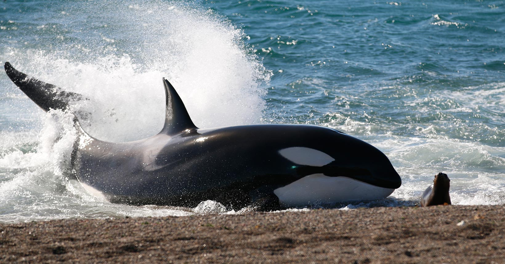

Os cientistas capturaram pela primeira vez imagens de drone mostrando duas orcas machos trabalhando juntas para caçar tubarões-brancos em 2022. Em seguida, os pesquisadores relataram que os animais, apelidados de Estibordo e Bombordo, "demonstraram uma predileção por extrair e consumir os fígados dos tubarões.
Um tubarão-branco representa uma significativa fonte de alimento, então não é surpreendente que em algumas populações [de orcas], onde esses tubarões são encontrados em número suficiente, as orcas tenham aprendido a explorar essa oportunidade.
